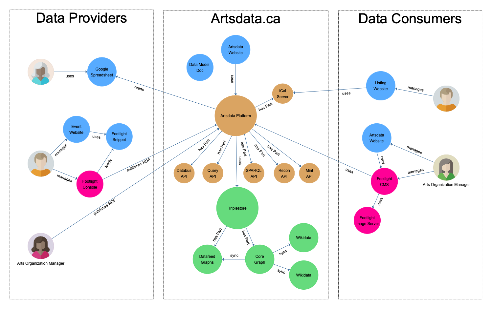

< Back | Home | Edit page | 🙋 Check for open issues |


Architecture des flux de données
L’écosystème de données ouvertes et liées d’Artsdata est composée de plusieurs parties que l’on peut regrouper en trois ensembles :
- Fournisseurs de données :
- Graphe de connaissances Artsdata ;
- Consommateurs de données.
Voici un schéma illustrant cette architecture ainsi que les flux de données entre les différents ensembles.

Detail des éléments de l’architecture
- Artsdata.ca Website
- Data Consumers
- Artsdata Data Model & Ontology
- Footlight Console
- L'outil Google Sheet-vers-Artsdata
- Google Sheet-to-Artsdata Tool
- Google Sheets
- Databus API
- iCal Server
- Minting API
- Query API
- Reconciliation API
- SPARQL Endpoint & Federation
- Artsdata Triplestore
Fournisseurs de données
Artsdata propose aux fournisseurs de données une diversité de processus et d’outils pour l’extraction-transformation-chargement (ETC) de leurs données :
- Extraction frontale par moissonnage de données structurées (c.-à-d. explorer des pages web et récupérer les données structurées au format JSON-LD ou microdonnées) ;
- Extraction frontale par moissonnage de données structurées et moissonage de texte par XPath (c.-à-d. explorer des pages web et récupérer des chaînes de texte dans le corps de la page à l’aide du XML Path Language) ;
- Extraction frontale combinant moissonnage de données structurées et reconnaissance naturelle du langage ;
- ETC par le biais de terminaux (APIs, JSON-LD) ;
- Google Sheet vers Artsdata (outil de conversion de données de chiffrier) ;
- Importation depuis Wikidata (un service permettant d’importer des éléments déjà chargés dans Wikidata) ;
- Console Footlight (logiciel de gestion de données événementielles pour un seul site web) ;
- CMS Footlight (logiciel de gestion de données événementielles multisite) ;
- API de chargement Artsdata (API graph-store) qui accepte de données RDF satisfaisant aux exigences minimales d’Artsdata et aux SHACL (ou ShEx lorsque les données proviennent de Wikidata).
L’extraction frontale est exécutée par le robot Artsdata, un agent utilisateur qui fonctionne de la même manière que les robots d’indexation des moteurs de recherche. Certains site n’autorise pas les robots à explorer les pages web (ou en autorisent certains et bloquent les autres). Pour savoir comment autoriser le robot Artsdata, consultez cette page de documentation.
Avant d’être déposées sur Artsdata, les données doivent satisfaire les exigences minimales du modèle de données d’Artsdata. Les formes SHACL sont utilisées pour valider les données avant l’importation.
Consultez la page Conditions pour les fournisseurs de données pour en apprendre davantage sur le processus d’extraction, de transformation, de chargement et d’enrichissement sémantique.
Le dépôt de données sur Artsdata exige un compte utilisateur Github enregistré auprès d’Artsdata. Nous encourageons les développeurs à s’enregistrer et à utiliser l’API bus de données d’Artsdata pour charger leurs données. Si vous souhaitez vous enregistrer auprès d’Artsdata ou avez besoin d’aide pour charger vos données, veuillez contacter l’équipe d’Artsdata.
Toutes les données déposées sur Artsdata sont par défaut publiées sous la licence CC0.
Pour en savoir plus, visitez la page Conditions pour les fournisseurs de données.
Les fournisseurs de données d’Artsdata comprennent des associations, des syndicats, des billetteries, ainsi que des organismes artistiques (voir la liste).
Graphe de connaissances Artsdata (kg.artsdata.ca)
Artsdata aggrège et partage des métadonnées descriptives à propos d’événements culturels (et des entités qui y sont associées) en provenance de multiples sites web et de bases de données. Les données sont publiées sous forme de données ouvertes et liées, c’est-à-dire avec des identifiants pérennes (exprimés sous forme d’URIs) qui permettent de lier des événements à des artistes, des lieux et des organismes.
Le modèle de données (ontologie) d’Artsdata est représenté selon des ontologies RDF. Il est un sous-ensemble de Schema.org et s’aligne sur un grand nombre d’ontologies formelles (par exemple, LRMoo, DBpedia) et non-formelles (par exemple, Wikidata).
Artsdata attribue ses propres identifiants pérennes (URIs) aux entités nommées lorsqu’elles satisfont aux exigences minimale pour l’attribution d’identifiants. Les utilisateurs enregistrés peuvent créer une URI Artsdata à partir d’une URI Wikidata. Artsdata s’appuie aussi sur des URIs externes (Wikidata, VIAF) pour désigner des entités nommées et des concepts.
Le triplestore d’Artsdata, est un triplestore standard (conforme aux normes du W3C) utilisant le produit « GraphDB Free » de la compagnie OntoText.
Consommateurs de données
Artsdata offre plusieurs modes d’accès pour les consommateurs de données désirant utiliser les données exposées par le biais d’Artsdata :
- Naviguer l’interface du graphe de connaissances à kg.artsdata.ca ;
- Appeler l’API de réconciliation pour récupérer les identifiants pérennes ;
- Déréférencer les identifiants pérennes pour récupérer les métadonnées associées au format JSON-LD ;
- Appeler l’API de requête RESTfull d’Artsdata ;
- S’abonner à un flux iCalendar personnalisé par l’entremise du serveur iCal ;
- Effectuer une requête sur le terminal SPARQL d’Artsdata ;
- Télécharger un fichier cliché (c.-à-d., un “dump”) sérialisé dans divers formats tels que JSON-LD ou N-Quads.
Les données déposées sur Artsdata sont sous licence CC0 et peuvent être utilisées dans d’autres applications sans restriction.
Les consommateurs de données Artsdata comprennent des calendriers culturels, des plateformes qui soutiennent l’industrie des arts, des organismes de service aux arts, des gouvernements et des moteurs de recherche (voir la liste). Pour un aperçu des cas d’usage, consultez nos récits utilisateur.